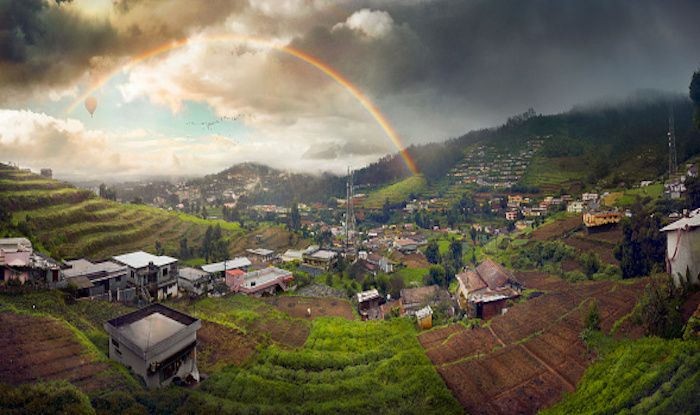
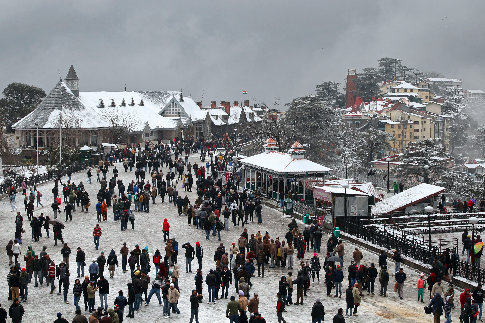
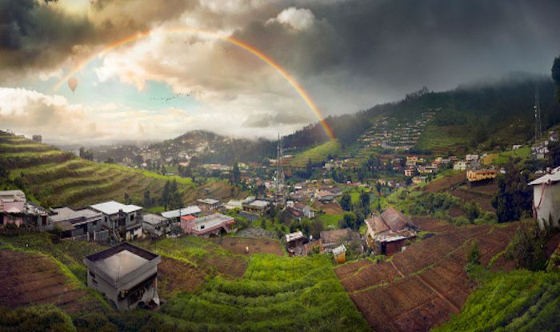
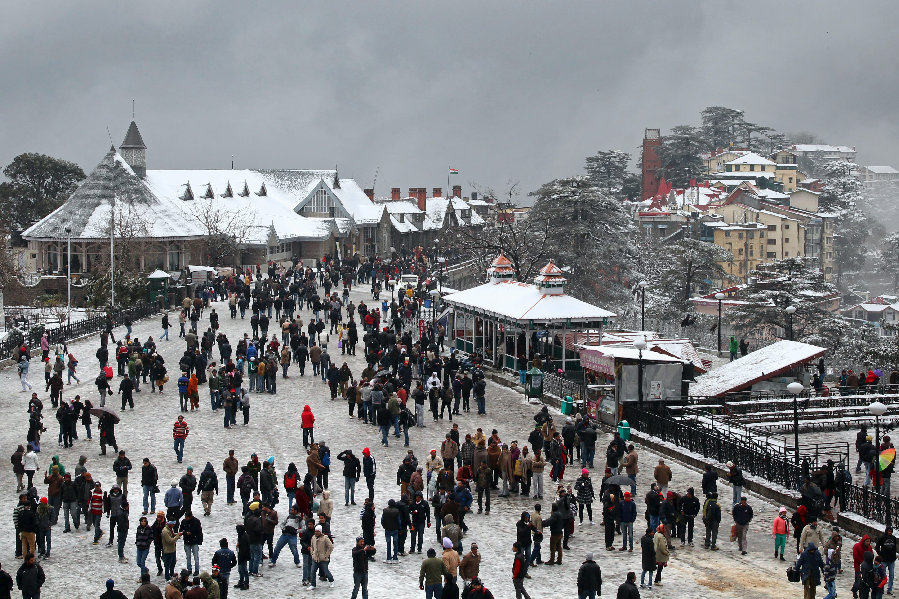

Tourism Places
 



Shimla
Shimla derives its name from Shyamala Devi, an incarnation of the goddess Kali, whose temple existed in the dense forest covering the Jakhu Hill in the early 19th century. Shimla is the capital of Himachal Pradesh and was also the summer capital in pre-Independence India. Covering an area of 25 sq km at a height of 7,238 ft, Shimla is surrounded by pine, deodar and oak forests. Its well developed amenities, easy reach and various tourist attractions make it one of India’s most popular hill stations. ALSO SEE 14 most stunning pictures of Shimla that will make you fall in love with the hill station!
Himalayas
The Himalayas are a range of mountains in Asia, most correctly defined as stretching from the Indus river in Pakistan, through India, Nepal, Bhutan, ending at the Bramaputra River in India. This is often extended to include the Karakoram, the Hindu Kush, and other minor ranges extending from the Pamir Knot, as these mountains are continuous with the Himalaya proper, and the geographical difference makes no difference for the traveller, we follow this convention here. This region includes the 14 highest mountains in the world, and over 100 peaks over 7200m.